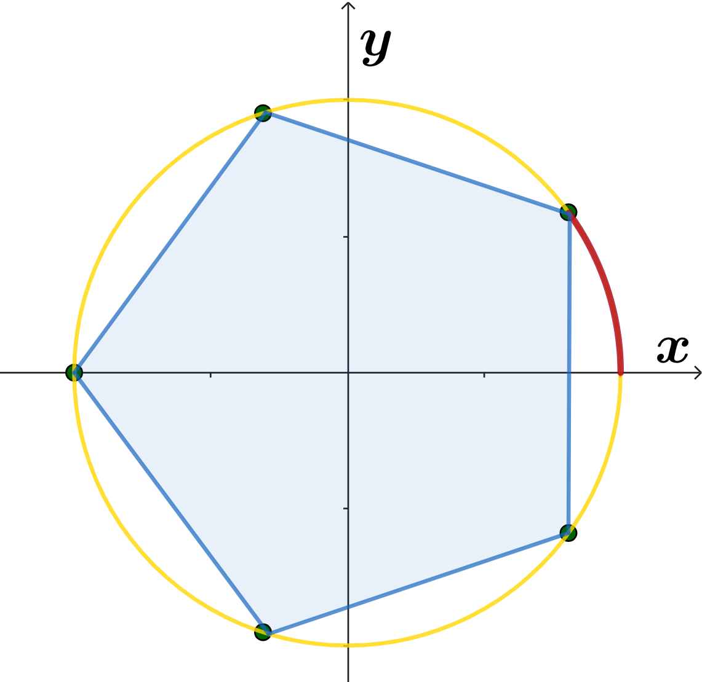
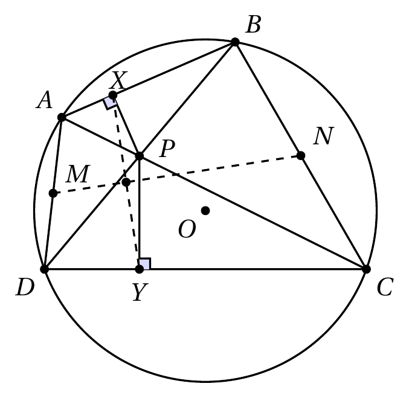
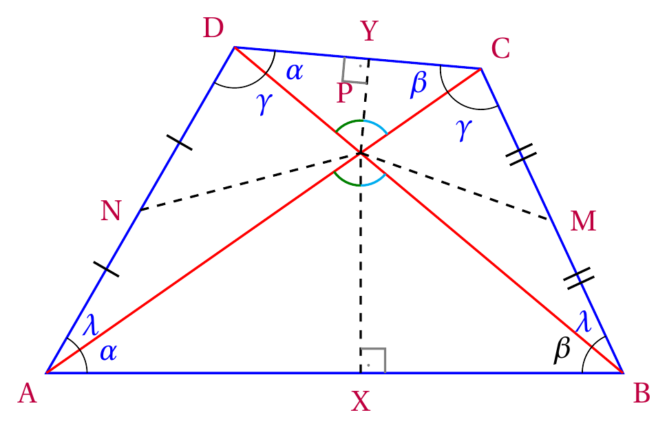
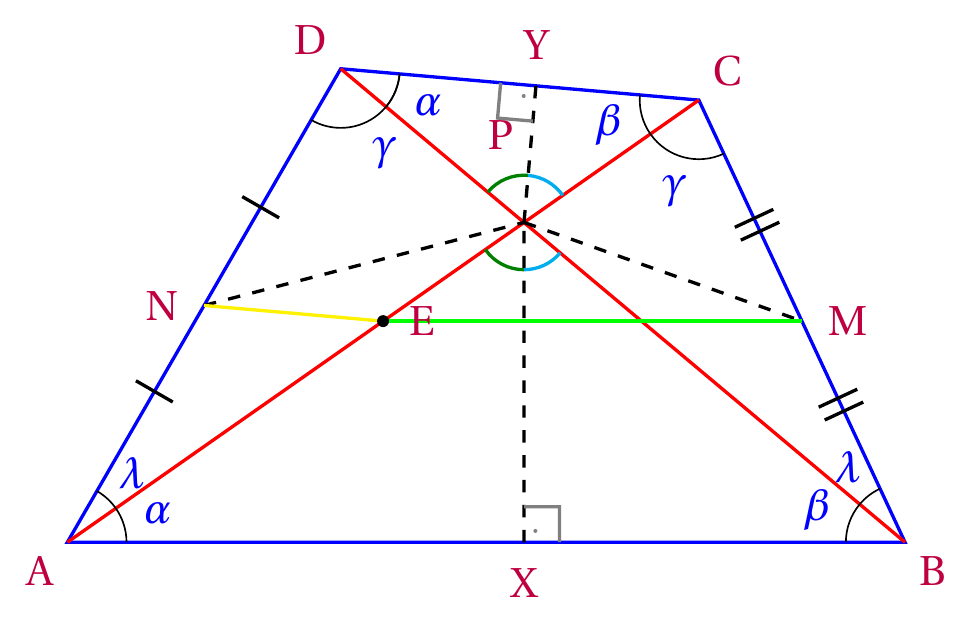
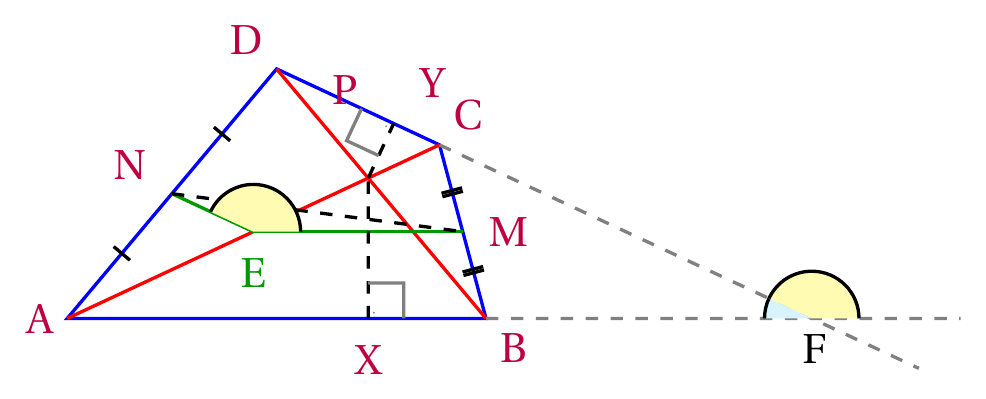
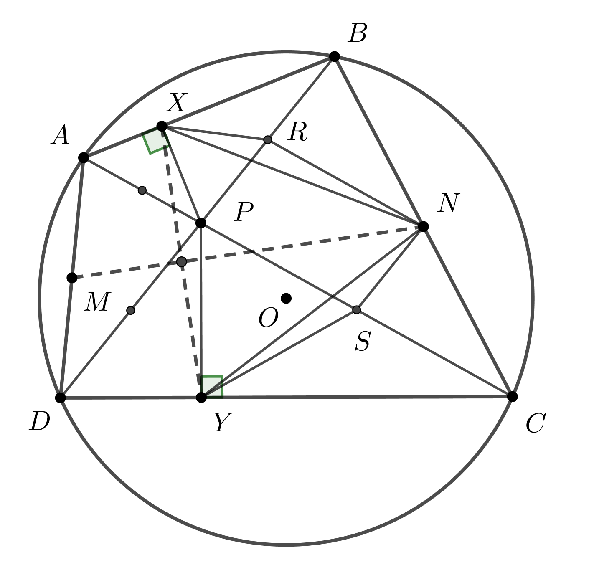

Problema 1. Mostre que para qualquer primo \(p > 17\), o número \[p^{32} - 1\] é divisível por \(16320\).
Solução (Solução de Vinícius Leite).
1o Método: Pequeno Teorema de Fermat e Fatoração
A fatoração em primos de \(16320\) é \(2^6 \cdot 3 \cdot 5 \cdot 17\). Como os fatores são potências de primos distintos, eles são coprimos entre si. Logo, basta demonstrar que \(p^{32}-1\) é divisível por cada um deles individualmente.
Divisibilidade por 3, 5 e 17:
Pelo Pequeno Teorema de Fermat, se \(q\) é um número primo e \(\text{mdc}(a,q)=1\), então \(a^{q-1} \equiv 1 \pmod q\). Como \(p > 17\) é primo, ele é coprimo com 3, 5 e 17.
Aplicando o teorema:
Para \(q=3\): \(p^2 \equiv 1 \pmod 3 \implies (p^2)^{16} \equiv 1^{16} \pmod 3 \implies p^{32} \equiv 1 \pmod 3\).
Para \(q=5\): \(p^4 \equiv 1 \pmod 5 \implies (p^4)^8 \equiv 1^8 \pmod 5 \implies p^{32} \equiv 1 \pmod 5\).
Para \(q=17\): \(p^{16} \equiv 1 \pmod{17} \implies (p^{16})^2 \equiv 1^2 \pmod{17} \implies p^{32} \equiv 1 \pmod{17}\).
Isso garante que 3, 5 e 17 dividem \(p^{32}-1\).
Divisibilidade por \(2^6\):
Fatorando a expressão recursivamente por diferença de quadrados, obtemos \[p^{32} - 1 = (p - 1)(p + 1)(p^2 + 1)(p^4 + 1)(p^8 + 1)(p^{16} + 1).\]
Como \(p\) é um primo maior que 17, \(p\) é ímpar. Os termos \((p - 1)\) e \((p + 1)\) são inteiros pares consecutivos. Um deles é necessariamente múltiplo de 2 e o outro é múltiplo de 4. O produto \((p - 1)(p + 1)\), portanto, é múltiplo de 8 (ou seja, divisível por \(2^3\)).
Os quatro termos restantes da forma \((p^k + 1)\) representam a soma de uma potência de base ímpar com 1, resultando sempre em números pares. Cada um desses quatro parênteses contribui com, pelo menos, um fator 2, totalizando um fator de \(2^4\).
Multiplicando todas as contribuições, garantimos que \(p^{32}-1\) é múltiplo de \(2^3 \cdot 2^4 = 2^7\). Sendo divisível por \(2^7\), é trivialmente divisível por \(2^6\).
Conclui-se que \(16320 \mid (p^{32}-1)\).
2o Método: Função de Carmichael
O problema equivale a provar a congruência \(p^{32} \equiv 1 \pmod{16320}\). Para isso, utilizaremos a Função de Carmichael, denotada por \(\lambda(n)\), que estabelece o menor expoente estritamente positivo tal que \(a^{\lambda(n)} \equiv 1 \pmod n\) para todo \(a\) coprimo com \(n\). Sabendo que \(16320 = 2^6 \cdot 3 \cdot 5 \cdot 17\), o valor de \(\lambda(16320)\) é dado pelo mínimo múltiplo comum das funções de seus fatores primos:
\[\lambda(16320) = \mathop{\mathrm{mmc}}(\lambda(2^6), \lambda(3), \lambda(5), \lambda(17)).\]
Pelas propriedades da função:
Para potências de base 2 com expoente \(k \ge 3\): \(\lambda(2^k) = 2^{k-2}\). Logo, \(\lambda(2^6) = 2^4 = 16\).
Para primos ímpares \(q\): \(\lambda(q) = q-1\). Logo, \(\lambda(3) = 2\), \(\lambda(5) = 4\) e \(\lambda(17) = 16\).
Substituindo esses valores, encontramos o expoente universal do grupo multiplicativo: \[\lambda(16320) = \mathop{\mathrm{mmc}}(16, 2, 4, 16) = 16.\]
Isto significa que, para todo inteiro coprimo com 16320, a elevação à \(16^{\text{a}}\) potência resulta em congruência a 1. Como \(p > 17\) é primo, temos que \(\mathop{\mathrm{mdc}}(p, 16320) = 1\). Portanto:
\[p^{16} \equiv 1 \pmod{16320}.\]
Elevando ambos os membros da congruência ao quadrado, obtemos diretamente o resultado exigido pela questão:
\[(p^{16})^2 \equiv 1^2 \pmod{16320} \implies p^{32} \equiv 1 \pmod{16320}.\]
Problema 2. Sejam \(c\) e \(x_0\) números reais positivos fixados. Defina a sequência \[x_n = \frac{1}{2}\left( x_{n-1} + \frac{c}{x_{n-1}}\right), \ \mbox{para} \ n \geq 1.\] Prove que a sequência converge e que o limite é \(\sqrt{c}\).
Solução (Solução de Yan Lima Machado). A princípio, pela desigualdade das médias, tem-se que:
\(\dfrac{x_{n-1}+\dfrac{c}{x_{n-1}}}{2}\geq \sqrt{x_{n-1}\cdot \dfrac{c}{x_{n-1}}}\).
\(\Leftrightarrow x_n \geq \sqrt{c}\).
Portanto, tem-se que a sequência é limitada inferiormente por \(\sqrt{c}\).
Desenvolvendo a expressão dada pelo enunciado, tem-se que:
\(x_n = \dfrac{x_{n-1}^2 + c}{2x_{n-1}}\).
Fazendo \(x_n-x_{n-1}\):
\(x_n-x_{n-1}=\dfrac{x_{n-1}^2+c}{2x_{n-1}}-\dfrac{2x_{n-1}^2}{2x_{n-1}}\).
\(x_n-x_{n-1}=\dfrac{c-x_{n-1}^2}{2x_{n-1}}\).
\(x_n-x_{n-1}=-\left[\dfrac{(x_{n-1}+\sqrt{c})(x_{n-1}-\sqrt{c})}{2x_{n-1}}\right]\).
Como \(x_{n-1}>0\), \(x_{n-1}+\sqrt{c}>0\).
Ademais, como visto no início da solução, \(x_{n-1}\geq\sqrt{c}\), daí \(x_{n-1}-\sqrt{c}\geq0\).
Logo, \(x_n-x_{n-1}\leq 0 \Rightarrow x_n\leq x_{n-1}\).
Como a sequência é limitada inferiormente por \(\sqrt{c}\) e decrescente a partir do primeiro termo \(n\geq1\), ela converge.
Como ela converge, \(\lim_{x\to \infty}x_n = \lim_{x\to \infty}x_{n-1} = L > 0\).
Daí, tem-se que
\(L=\dfrac{1}{2}(L+\dfrac{c}{L})\)
\(\Leftrightarrow2L=L+\dfrac{c}{L}\)
\(\Leftrightarrow2L^2=L^2+c\)
\(\Leftrightarrow L^2=c\)
\(\Leftrightarrow L=\sqrt{c}\).
Portanto, está mostrado que o limite da sequência é \(\sqrt{c}\).
Curiosidade: A questão apresenta o método de Herão, também conhecido como método babilônico, um algoritmo utilizado para calcular aproximações de raízes quadradas. Ele homenageia o matemático grego Herão de Alexandria, que descreveu o procedimento em seus escritos. O método começa com uma estimativa inicial para a raiz desejada e, em seguida, utiliza uma fórmula iterativa para obter aproximações cada vez melhores. Por essa razão, ele é considerado um dos métodos numéricos mais antigos e importantes da história da matemática.
Problema 3. Calcule o determinante da matriz quadrada de ordem \(n\), \(A = (a_{ij})_{ij}\), definida por \[a_{ij} = \begin{cases} (-1)^{|i-j|}, \ \ \mbox{se} \ i \neq j \\ 2, \ \ \mbox{se} \ i=j \end{cases}.\]
Solução (Solução de Victor Leite).
Análise dos Casos Iniciais e Formulação da Hipótese
Para começar, testaremos os casos para \(n=1, 2, 3\) a fim de identificar um padrão útil para ser explorado.
Para \(n=1\): \[A_1 = [2] \implies \det(A_1) = 2\]
Para \(n=2\): \[A_2 = \begin{bmatrix} 2 & -1 \\ -1 & 2 \end{bmatrix} \implies \det(A_2) = (2)(2) - (-1)(-1) = 3\]
Para \(n=3\): \[A_3 = \begin{bmatrix} 2 & -1 & 1 \\ -1 & 2 & -1 \\ 1 & -1 & 2 \end{bmatrix}\]
Calculando o determinante pela Regra de Sarrus: \[\begin{aligned} \det(A_3) &= [(2)(2)(2) + (-1)(-1)(1) + (1)(-1)(-1)] \\ &\quad - [(1)(2)(1) + (-1)(-1)(2) + (2)(-1)(-1)] \\ &= [8 + 1 + 1] - [2 + 2 + 2] \\ &= 10 - 6 = 4 \end{aligned}\]
A sequência de determinantes \((2, 3, 4)\) para matrizes de ordem \((1, 2, 3)\) sugere uma progressão aritmética. Formulamos a seguinte hipótese para o caso geral de ordem \(n\): \[\det(A_n) = n+1\]
Demonstração via Teorema de Jacobi
Para provar que \(\det(A_n) = n+1\) para qualquer \(n \ge 1\), aplicaremos o Teorema de Jacobi:
Seja \(A\) uma matriz quadrada de ordem \(n\) (\(n \ge 2\)). Se a uma fila (linha ou coluna) de \(A\) for adicionado um múltiplo escalar de outra fila paralela a ela, obtemos uma matriz \(B\) tal que \[\det(A) = \det(B).\]
Em outras palavras: somar a uma linha (ou coluna) qualquer múltiplo de outra linha (ou coluna) não altera o valor do determinante. Isso nos ajudará a simplificar o cálculo do determinante da matriz genérica \(A_n\).
A representação expandida da matriz original \(A_n\) é \[A_n = \begin{bmatrix} 2 & -1 & 1 & -1 & \cdots & (-1)^{n-1} \\ -1 & 2 & -1 & 1 & \cdots & (-1)^{n-2} \\ 1 & -1 & 2 & -1 & \cdots & (-1)^{n-3} \\ -1 & 1 & -1 & 2 & \cdots & (-1)^{n-4} \\ \vdots & \vdots & \vdots & \vdots & \ddots & \vdots \\ (-1)^{n-1} & (-1)^{n-2} & (-1)^{n-3} & (-1)^{n-4} & \cdots & 2 \end{bmatrix}.\]
1. Operações nas Linhas:
Note que a presença de vários termos 1 e -1 alternados nos permite zerar grande parte da matriz simplesmente somando ou subtraindo as linhas entre si, logo, para toda linha \(L_k\) exceto a primeira, aplicaremos a transformação \(L_k \leftarrow L_k + (-1)^k L_1\). Note que \((-1)^k\) nos permite alternar entre soma e subtração com base na paridade da linha, resolvendo a alternância entre 1 e -1 e transformando a maior parte em 0, de brinde transformando (quase) todos os elementos da diagonal principal em 1.
Para o elemento da diagonal \((j=k)\): \[a'_{kk} = 2 + (-1)^k(-1)^{k-1} = 2 - (-1)^{2k} = 2 - 1 = 1.\]
Para a primeira coluna \((j=1)\): \[a'_{k1} = (-1)^{k-1} + (-1)^k(2) = -(-1)^k + 2(-1)^k = (-1)^k.\]
Após essas operações, a matriz assume a forma \(A'_n\): \[A'_n = \begin{bmatrix} 2 & -1 & 1 & -1 & \cdots & (-1)^{n-1} \\ 1 & 1 & 0 & 0 & \cdots & 0 \\ -1 & 0 & 1 & 0 & \cdots & 0 \\ 1 & 0 & 0 & 1 & \cdots & 0 \\ \vdots & \vdots & \vdots & \vdots & \ddots & \vdots \\ (-1)^{n} & 0 & 0 & 0 & \cdots & 1 \end{bmatrix}\]
2. Operações nas Colunas:
Seria muito agradável zerar todos os elementos da coluna 1 (exceto o primeiro), pois isso tornaria a matriz triangular superior. Note que, novamente, realizando somas e subtrações entre a primeira coluna e as demais colunas, podemos usar os elementos 1 da diagonal principal para zerar os elementos da primeira coluna. Para isso, aplicamos a transformação \(C_1 \leftarrow C_1 - \sum_{k=2}^n (-1)^k C_k\). Note que, novamente, o \((-1)^k\) permite que alternemos entre soma e subtração, resolvendo a alternância entre 1 e -1 e zerando todos os elementos da primeira coluna, exceto o primeiro. Como as colunas \(C_k\) (\(k \ge 2\)) possuem apenas o elemento 1 na linha \(k\) e 0 nas demais posições abaixo da primeira linha, essa operação zera completamente todos os \(a'_{k1}\) para \(k \ge 2\). O elemento \(a_{11}\) sofre a seguinte alteração:
\[\begin{aligned} a''_{11} &= 2 - \sum_{k=2}^n (-1)^k a_{1k} \\ &= 2 - \sum_{k=2}^n (-1)^k (-1)^{k-1} \\ &= 2 - \sum_{k=2}^n (-1)^{2k-1}. \end{aligned}\]
Como \(2k-1\) é sempre um número ímpar, \((-1)^{2k-1} = -1\). Logo \[a''_{11} = 2 - \sum_{k=2}^n (-1) = 2 + \sum_{k=2}^n 1 = 2 + (n-1) = n+1.\]
A matriz final \(A''_n\) torna-se estritamente triangular superior: \[A''_n = \begin{bmatrix} n+1 & -1 & 1 & -1 & \cdots & (-1)^{n-1} \\ 0 & 1 & 0 & 0 & \cdots & 0 \\ 0 & 0 & 1 & 0 & \cdots & 0 \\ 0 & 0 & 0 & 1 & \cdots & 0 \\ \vdots & \vdots & \vdots & \vdots & \ddots & \vdots \\ 0 & 0 & 0 & 0 & \cdots & 1 \end{bmatrix}.\]
Como o determinante de uma matriz triangular é dado pelo produto dos elementos de sua diagonal principal, \[\det(A_n) = (n+1) \cdot \prod_{k=2}^n 1 = n+1.\]
Isso conclui a demonstração formal da hipótese.
Solução (Solução de Vinícius Mello).
A matriz \(A\) é uma matriz pode ser escrita como \[A=I+u_n u_n^T,\] onde \(I\) é a matriz identidade de ordem \(n\) e \(u_n^T=[1 \ \ -1 \ \ 1 \ \ -1 \ldots (-1)^{n-1}]\), ou seja, \(u_n\) é uma matriz coluna cujas entradas alternam entre \(1\) e \(-1\). Por exemplo, para \(n=4\) temos \[\begin{aligned} A & = \begin{pmatrix} 2 & -1 & 1 & -1 \\ -1 & 2 & -1 & 1 \\ 1 & -1 & 2 & -1 \\ -1 & 1 & -1 & 2 \end{pmatrix} \\ & = \begin{pmatrix} 1 & 0 & 0 & 0 \\ 0 & 1 & 0 & 0 \\ 0 & 0 & 1 & 0 \\ 0 & 0 & 0 & 1 \end{pmatrix} + \begin{pmatrix} 1 \\ -1 \\ 1 \\ -1 \end{pmatrix} \begin{pmatrix}1 & -1 & 1 & -1 \end{pmatrix}. \end{aligned}\] Portanto, pela conhecida identidade \[\det(I+uv^T) = 1 + v^Tu,\] aplicando-a com \(u=u_n\) e \(v=u_n\), temos \[\det(A) = \det(I+u_n u_n^T) = 1 + u_n^T u_n = 1 + n.\] Se a identidade \(\det(I+uv^T) = 1 + v^Tu\) não for tão conhecida assim, podemos demonstrá-la rapidamente com a seguinte ideia: se \(u=0\), não há nada a demostrar. Caso contrário, é fácil ver que \(u\) é um autovetor de \(I+uv^T\) com autovalor \(1+v^Tu\), pois \[(I+uv^T)u = u + u(v^Tu) = (1+v^Tu)u.\] Além disso, se \(x\) é um vetor tal que \(v^Tx=0\), então \((I+uv^T)x = x\), ou seja, \(x\) é um autovetor de \(I+uv^T\) com autovalor \(1\). Como o espaço vetorial \(\mathbb{R}^n\) tem dimensão \(n\), podemos escolher \(n-1\) vetores linearmente independentes \(x_1, \ldots, x_{n-1}\) tais que \(v^Tx_i=0\) para todo \(i\). Assim, os autovalores de \(I+uv^T\) são \(1+v^Tu\) e \(1\) (com multiplicidade \(n-1\)). Portanto, como o determinante de uma matriz é o produto de seus autovalores, temos \[\det(I+uv^T) = (1+v^Tu) \cdot 1^{n-1} = 1 + v^Tu.\]
Problema 4. Considere uma esfera de raio unitário centrada na origem de um sistema de coordenadas \(xyz\). Seja \(C\) um pentágono regular inscrito na esfera e contido no plano \(xy\). Determine a área da região contida na esfera cuja projeção com respeito à terceira coordenada coincide com a região delimitada por \(C\).
Solução: Considere a projeção no plano \(xy\) dada pela região poligonal limitada pelo pentágono na figura abaixo.

Os pontos da esfera que são projetados nessa região (aqui contando as partes superior e inferior da esfera que se projetam na região poligonal) formam uma região cuja área pode ser calculada através de \[A = 4\pi - 5 \cdot A_{\mbox{revolução}}\] onde: \(4\pi\) é a área da superfície esférica de raio 1 (\(4\pi R^2\)), e \(A_{\mbox{revolução}}\) é a área da superfície de revolução obtida pela rotação da curva que pode ser parametrizada por \[\mathcal{C} : \begin{cases} x(t) = \cos(t), \\ y(t) = \sin(t) \end{cases} \ \ \ 0 \leq t \leq \frac{\pi}{5}\] (cujo traço é o arco em destaque na figura), em torno do eixo \(x\). Temos que \[\begin{aligned} A_{\mbox{revolução}} &= 2\pi \int_{0}^{\frac{\pi}{5}} y(t)\sqrt{[x'(t)]^2 + [y'(t)]^2} \ dt \\ &= 2\pi \int_{0}^{\frac{\pi}{5}} \sin(t)\sqrt{[-\sin(t)]^2 + [\cos(t)]^2} \ dt \\ &= 2\pi \int_{0}^{\frac{\pi}{5}} \sin(t) \ dt \\ &= 2\pi \left[-\cos(t)\bigg|_{0}^{\pi/5}\right] \\ &= 2\pi(1 - \cos(\pi/5)) = \frac{(3 - \sqrt{5})\pi}{2} \end{aligned}\]
[O fato de que \(\cos(\pi/5) = \frac{1+\sqrt{5}}{4}\) pode ser obtido usando relações trigonométricas em um triângulo isósceles de ângulos \(36^{\circ}, 72^{\circ}, 72^{\circ}\) e base 1]. Portanto, \[A = \frac{8\pi - 5(3 - \sqrt{5})\pi}{2} = \frac{(5\sqrt{5} - 7)\pi}{2}.\]
Problema 5. Seja \(f\) diferenciável em \(x=a\) com \(f(a) \neq 0\). Calcule: \[\displaystyle \lim_{n \to \infty} \left [ \dfrac{f(a+1/n)}{f(a)} \right ]^n.\]
Solução: Basta calcular
\[\lim_{x \to 0} \left[ \frac{f(a + x)}{f(a)} \right]^{1/x}.\]
Como \(f\) é contínua, para \(x\) suficientemente pequeno, \(f(a + x)\) e \(f(a)\) têm o mesmo sinal, e daí segue que
\[\log \left[ \lim_{x \to 0} \left( \frac{f(a + x)}{f(a)} \right)^{1/x} \right] = \lim_{x \to 0} \left[ \log \left( \frac{|f(a + x)|}{|f(a)|} \right)^{1/x} \right]\] \[= \lim_{x \to 0} \frac{\log |f(a + x)| - \log |f(a)|}{x}.\] A última expressão à direita é a definição da derivada de \(\log |f(x)|\) em \(x = a\), que sabemos ser igual a \(f'(a)/f(a)\). Assim,
\[\lim_{x \to 0} \left[ \frac{f(a + x)}{f(a)} \right]^{1/x} = e^{f'(a)/f(a)}.\]
Problema 6. Sejam \(A, B \in M(n, \mathbb{C})\) e \(P \in \mathbb{C}[X]\) um polinômio não constante tal que \(P(0) \neq 0\) e \(A B=P(A)\). Prove que a matriz \(A\) é invertível e que as matrizes \(A\) e \(B\) comutam (isto é, que \(AB=BA\)).
Podemos escrever \(P(X)\) da seguinte forma: \[P(X) = P(0) + XQ(X),\] onde \(Q \in \mathbb{C}[X]\). Assim segue que \[P(A) = P(0) \cdot I_n + AQ(A).\] Agora, como \[P(A) = AB,\] temos que \[AB = P(0) \cdot I_n + AQ(A)\] e daí \(A[B - Q(A)] = P(0)I_n.\) Mas, \[P(0) \neq 0\] implica que \[A \cdot \frac{1}{P(0)}[B - Q(A)] = I_n \implies A^{-1} = \frac{1}{P(0)}[B - Q(A)].\]
Logo \(A\) é invertível e a expressão acima é a inversa de \(A\). Por outro lado, \[AB = P(A) \iff B = A^{-1}P(A).\] Então temos que \[BA = A^{-1}P(A)A = A^{-1}AP(A) = I_nP(A) = P(A) = AB.\]
Portanto as matrizes \(A\) e \(B\) comutam.
Problema 7. O produto dos números reais positivos \(a_1, a_2, \ldots, a_n\) é igual a 1. Prove, sem ser por indução, que \[(1+a_1)\cdot(1+a_2)\cdots (1+a_n) \geq 2^n.\]
Solução (Solução de Vinícius Leite).
Desigualdade das Médias (MA-MG)
A demonstração utiliza a Desigualdade das Médias Aritmética e Geométrica (MA-MG). Para quaisquer números reais positivos \(x\) e \(y\), temos que \[\frac{x+y}{2} \ge \sqrt{xy} \implies x+y \ge 2\sqrt{xy}.\]
Aplicando essa desigualdade individualmente para cada par formado por \(1\) e \(a_i\) (sabendo que \(a_i > 0\)), construímos o seguinte sistema de desigualdades: \[\begin{aligned} 1+a_1 &\ge 2\sqrt{a_1} \\ 1+a_2 &\ge 2\sqrt{a_2} \\ &\ \ \vdots \\ 1+a_n &\ge 2\sqrt{a_n}. \end{aligned}\]
Como todos os termos em ambos os lados das desigualdades são estritamente positivos, podemos multiplicar as \(n\) desigualdades membro a membro sem alterar o sentido da relação: \[(1+a_1)(1+a_2)\cdots(1+a_n) \ge (2\sqrt{a_1})(2\sqrt{a_2})\cdots(2\sqrt{a_n}).\]
Agrupando os \(n\) fatores \(2\) e unificando as raízes no lado direito, obtemos \[(1+a_1)(1+a_2)\cdots(1+a_n) \ge 2^n\sqrt{a_1\cdot a_2 \cdots a_n}.\]
Por hipótese, o produto de todos os termos \(a_i\) é exatamente 1 (\(a_1\cdot a_2 \cdots a_n = 1\)). Substituindo esse valor, a expressão sob a raiz resulta em 1 (elemento neutro da multiplicação): \[(1+a_1)(1+a_2)\cdots(1+a_n) \ge 2^n\sqrt{1}.\]
O que demonstra diretamente a tese: \[(1+a_1)(1+a_2)\cdots(1+a_n) \ge 2^n.\]
Problema 8. Seja \(A\) um subconjunto dos números naturais tal que, entre 100 números naturais consecutivos, existe um elemento de \(A\). Prove que podemos encontrar quatro números diferentes \(a, b, c\) e \(d\) em \(A\) tais que \(a+b = c+d\).
Solução (Solução de Victor Leite).
1o Passo: A infinitude do conjunto \(A\)
Dado que entre 100 naturais consecutivos existe, ao menos, um elemento de \(A\), podemos concluir que o número de elementos de \(A\) equivale, no mínimo, à quantidade de partições de 100 elementos do conjunto dos naturais, que por sua vez é infinito. Logo, podemos afirmar que o conjunto \(A\) possui infinitos termos, e podemos escrever \(A = \{ a_1, a_2, a_3, \ldots \}\), com \(a_i < a_{i+1}\).
2o Passo: O Princípio da Casa dos Pombos
Provar que \(\exists \ a, b, c, d \in A \mid a+b = c+d\) equivale a provar que para \(a, b, c, d \in A\), \(a-c = d-b\), o que, por sua vez, equivale a provar que a distância entre \(a\) e \(c\) equivale à distância entre \(d\) e \(b\).
Sabendo que a cada 100 naturais consecutivos existe sempre ao menos um elemento de \(A\), podemos afirmar que em qualquer intervalo fechado do tipo \([a_n, a_n+100]\) existirão ao menos 2 elementos de \(A\). Logo, a distância máxima possível entre dois elementos consecutivos \(a_n\) e \(a_{n+1}\) pertencentes ao conjunto \(A\) é rigorosamente 100.
Como as distâncias entre elementos consecutivos resultam em números inteiros, todas as distâncias possíveis pertencem ao intervalo \([1, 100]\). Portanto, o número máximo de distâncias distintas entre elementos consecutivos de \(A\) é 100.
Para aplicar o Princípio da Casa dos Pombos, analisamos os 202 primeiros elementos de \(A\). Com eles, podemos formar exatamente 101 pares disjuntos de elementos consecutivos: \[(a_1, a_2), (a_3, a_4), \dots, (a_{201}, a_{202}).\]
Temos 101 pares gerando 101 medidas de distância. Como existem no máximo 100 valores distintos possíveis para essas distâncias, o Princípio da Casa dos Pombos (Teorema de Dirichlet) garante que, inevitavelmente, ao menos 2 pares disjuntos possuirão exatamente a mesma distância.
Sejam esses pares disjuntos \((c, a)\) e \((b, d)\), ambos pertencentes a \(A\), tais que a distância do primeiro par seja igual à distância do segundo par: \[a - c = d - b.\]
Manipulando algebricamente a igualdade, obtemos diretamente: \[a + b = c + d.\]
Como os dois pares analisados são disjuntos e os elementos de \(A\) podem ser dispostos em uma sequência estritamente crescente de naturais, os quatro números \(a, b, c\) e \(d\) são obrigatoriamente distintos, o que conclui a prova.
Problema 9. Uma pilha tem 40 pedras. A pilha é dividida em duas partes, depois uma das partes é dividida em duas novamente, etc., até termos 40 pedras separadas (40 pilhas formadas com uma pedra cada). Depois de cada divisão de uma das pilhas em duas menores, escrevemos o produto dos números de pedras nestas duas pilhas em um quadro. Mostre que, no final, a soma de todos os números no quadro será igual a 780.
Solução: Para mostrar o resultado desejado, vamos analisar o problema de um ponto de vista mais geral, para tentar achar algum padrão que possa ser generalizado e então resolver o caso particular de \(40\) pedras. Seja \(n\) o número de pedras no início da divisão e chamemos de \(S_n\) a soma final obtida ao final do processo.
Para \(n = 2\): a única opção de divisão é \(2 = 1 + 1\), cujo produto é \(S_2 = 1\);
Para \(n = 3\): por simetria, podemos considerar a divisão inicial \(3 = 2 + 1\), anotando no quadro o valor \(2\). Após isso, veja que os próximos números a serem anotados no quadro são os que podem ser gerados começando com \(2\) pedras. Nesse caso, já sabemos o que ocorre. Assim, ao final teremos a soma \(S_3 = 2 + 1 = 3\);
Para \(n = 4\): podemos começar com duas possíveis divisões iniciais \(4 = 2 + 2\) ou \(4 = 3 + 1\), anotando no quadro o valor \(4\) ou \(3\), respectivamente. Após isso, veja que os próximos números a serem anotados no quadro são os que podem ser gerados começando com \(2\) pedras ou \(3\) pedras. Nesse caso, já sabemos o que ocorre. Assim, ao final teremos a soma \(S_4 = 4 + 1 + 1 = 6\) (no primeiro caso) e \(S_4 = 3 + 3 = 6\) (no segundo caso). Podemos ver que, de fato, a soma final \(S_n\) parece não depender das escolhas de divisões feitas;
Suponha que esse padrão de independência das escolhas de divisões não afete a soma final. Ao começar com \(n\) pedras, façamos a divisão \(n = (n - 1) + 1\), anotando o produto \(n - 1\). Sucedendo nesse padrão de divisão, sempre separando apenas 1 pedra em cada etapa, teremos anotado os produtos \(n - 1, \ n - 2, \ldots, 2\) e \(1\), cuja soma é \(S_n = \frac{n(n-1)}{2}\).
Pronto, agora vamos provar em definitivo que, de fato, isso independe das escolhas de divisões iniciais e intermediárias. Provaremos, por indução, que \(S_n = \frac{n(n-1)}{2}\) independe das escolhas de divisões.
Para \(n = 2\), já temos o desejado. Agora, suponhamos que isso vale para todo \(k\) natural entre \(2\) e \(n - 1\), isto é, que \(S_k = \frac{k(k-1)}{2}\) independe das escolhas de divisões, \(k = 2, \ldots, n - 1\).
Agora, partindo de \(n\) pedras, podemos fazer a divisão inicial \(n = k + (n - k)\) com \(k, n - k \leq n - 1\). Temos que o produto inicial anotado no quadro é \(k(n - k)\). Mas, por hipótese de indução, vale que \(S_k = \frac{k(k-1)}{2}\) e \(S_{n-k} = \frac{(n-k)(n-k-1)}{2}\) (aqui supondo que \(S_1 = 0\)). Assim, a soma dos produtos anotados no quadro é \[k(n - k) + \frac{k(k-1)}{2} + \frac{(n-k)(n-k-1)}{2}\] \[= \frac{2k(n-k) + k^2 + (n-k)^2 - k - (n-k)}{2}\] \[= \frac{(k + (n-k))^2 - n}{2} = \frac{n^2 - n}{2} = \frac{n(n-1)}{2}.\] Portanto, \(S_n = \frac{n(n-1)}{2}\), e o resultado vale para todo \(n \geq 2\) (\(n \geq 1\) se incluirmos \(S_1 = 0\)). Com isso, \(S_{40} = \frac{40 \cdot 39}{2} = 780\), como queríamos demonstrar.
Problema 10. A sequência de números inteiros \(x_n\) é definida por \(x_1 = 4\), \(x_2 = 6\) e, para \(n \geq 3\), \(x_n\) é o menor número composto maior que \(2x_{n-1} - x_{n-2}\). Encontre o valor de \(x_{2026}\).
Solução:
Vamos calcular os primeiros termos da sequência:
\[\begin{aligned} 2x_{2} - x_1 = 8 & \Rightarrow & x_3 = 9 \\ 2x_{3} - x_2 = 12 & \Rightarrow & x_4 = 14 \\ 2x_{4} - x_3 = 19 & \Rightarrow & x_5 = 20 \\ 2x_{5} - x_4 = 26 & \Rightarrow & x_6 = 27 .\\ \end{aligned}\]
Note que
\[\begin{aligned} x_4 - x_3 & = & 5 \\ x_5 - x_4 & = & 6 \\ x_6 - x_5 & = & 7 .\\ \end{aligned}\]
Isso nos permite conjecturar que
\[x_{n} - x_{n-1} = n + 1.\]
Realizando a soma telescópica da identidade anterior para \(n \in \{4,5, \ldots, k\}\), obtemos \[\begin{aligned} x_i & = & x_3+ 5+6+\ldots+(i+1) \\ & = & 9 + [1 + 2 + 3 + 4 + \cdots + i + (i+1)] - (1 + 2 + 3 + 4)\\ & = & \dfrac{(i+1)(i+2)}{2} - 1 \\ & = & \dfrac{i^2 + 3i}{2} = \dfrac{i(i+3)}{2}. \end{aligned}\]
Provemos a afirmação anterior por indução. Suponha que ela vale para todos os inteiros \(i \in \{3,4, \ldots, k\}\). Para provar que também vale para \(k+1\), note que
\[2x_k - x_{k-1} = 2 \cdot \dfrac{k(k+3)}{2} - \dfrac{(k-1)(k+2)}{2} = \dfrac{(k+1)(k+4)}{2} - 1.\] Se \(k \geq 3\), a depender da paridade de \(k\), podemos escrever \(\dfrac{(k+1)(k+4)}{2} = \dfrac{k+1}{2} \cdot (k+4)\) ou \(\dfrac{k+4}{2} \cdot (k+1)\), garantindo assim que \[x_{k+1} = \dfrac{(k+1)(k+4)}{2}.\] Portanto, \(x_{2026} = \dfrac{2026 \cdot 2029}{2}.\)
Problema 11. Em uma festa, existem \(25\) membros que satisfazem a seguinte condição: quando dois deles não se conhecem, então eles possuem algum amigo em comum. Sabemos que ninguém conhece todos na festa. Prove que a soma dos números de amigos de cada pessoa na festa é pelo menos \(72\).
Solução:
Primeiramente observe que se uma pessoa da festa conhecer apenas uma outra, então essa última será obrigada a conhecer todos os demais da festa. Portanto, todos na festa conhecem pelo menos duas pessoas. Suponha, por absurdo, que a soma dos números de amigos de cada um é menor que \(72\). Como ela deve ser um número par, ela é no máximo \(70\). Dado que \(70/3 < 25\), pelo Princípio da Casa dos Pombos, há uma pessoa, digamos \(A\), que conhece exatamente duas outras pessoas, digamos \(B\) e \(C\). As outras \(22\) pessoas que não conhecem \(A\) obrigatoriamente devem conhecer \(B\) ou \(C\). Assim, a soma dos números de amigos de \(A\), \(B\) e \(C\) é pelo menos \(2+1+1+22 = 26\). Cada uma das outras \(22\) pessoas conhece pelo menos duas outras, e assim a soma dos números de amigos de todos é pelo menos \(22\cdot 2 + 26 = 70\). Para que ocorra essa igualdade, \(B\) e \(C\) não devem se conhecer, e cada um dos demais membros deve conhecer exatamente um dos dois. Isso nos permite classificar os \(22\) membros que não estão em \(\{A,B,C\}\) em dois grupos: o grupo \(G_B\) (dos que conhecem \(B\)) e o grupo \(G_C\) (dos que conhecem \(C\)). Pelo Princípio da Casa dos Pombos, pelo menos um desses grupos, digamos \(G_B\), possui \(11\) membros. Se \(C\) conhecer qualquer um deles, a soma anterior irá ultrapassar \(70\). Para que isso não ocorra, \(C\) deve possuir um amigo em comum com cada um dos membros de \(G_B\), que necessariamente devem ser distintos, porque cada um deles conhece apenas \(2\) pessoas. Consequentemente, \(G_C\) possui pelo menos \(11\) membros. Isso é um absurdo, porque uma pessoa de \(G_B\) que não conheça uma de \(G_C\) não poderá ter um amigo em comum com ela.
Problema 12. Seja \(ABCD\) um quadrilátero inscritível e \(P=BD \cap AC\). Os pés das perpendiculares de \(P\) aos lados \(AB\) e \(CD\) são \(X\) e \(Y\). Se \(M\) e \(N\) são os pontos médios dos lados \(BC\) e \(AD\), prove que \(MN \perp XY\).

Solução (Solução de Roberto Sant’anna e Yan Lima Machado)
Pelo enunciado, tem-se o seguinte esboço:

Como \(ABCD\) é inscritível, tem-se que \(\angle BDC = \angle CAB = \alpha\), \(\angle DBA = \angle DCA = \beta\), \(\angle ADB = \angle ACB = \gamma\) e \(\angle DAC = \angle DBC = \lambda\). Ademais, tem-se que \(PX\) e \(PY\) são alturas dos triângulos \(ABP\) e \(CDP\), respectivamente.
Portanto, tem-se que os triângulos \(CDP\) e \(ABP\) são semelhantes e, daí, tem-se que:
\(\dfrac{AB}{CD}=\dfrac{XP}{YP}\).
Seja \(E\) o ponto médio de \(AC\) (esboço abaixo). Como \(M\) e \(N\) são pontos médios de \(AD\) e \(BC\) respectivamente, temos que \(EM\) e \(EN\) são bases médias de \(ABC\) e \(CDA\), respectivamente, e, portanto
\(\dfrac{AB}{CD}=\dfrac{EM}{EN}=\dfrac{XP}{YP}\) (1).

Ademais, \(EM \parallel AB\) e \(EN \parallel CD\).
Pela conclusão anterior, sem perda de generalidade, pode-se inferir que \(PX\) é perpendicular à reta suporte de \(EM\), chamemo-la de \(r\). Analogamente, \(PY\) é perpendicular à reta suporte de \(EN\), chamemo-la de \(s\).
Analisando os ângulos \(\angle NEM\) e \(\angle YPX\), tem-se que ambos são congruentes.
Prova: Como \(EM \parallel AB\) e \(EN \parallel CD\), ao prolongar os lados AB e CD, eles se encontram num ponto F, o ângulo obtuso formado entre os prolongamentos é congruente ao ângulo \(\angle NEM\).

Analisando o quadrilátero \(FYPX\) formado, tem-se, na soma dos ângulos internos, que:
\(\angle XFY + 90^o + 90^o + \angle YPX = 360^o\)
\(\Leftrightarrow \angle YPX = 180^o - \angle XFY\)
\(\Leftrightarrow \angle YPX = \angle NEM\) (2)
Logo, pelas equações (1) e (2), tem-se que \(NEM\) e \(XYP\) são triângulos semelhantes devido ao caso LAL de semelhança.
Como visto anteriormente, \(PX \perp r \supset EM\) e \(PY \perp s \supset EN\); então, obrigatoriamente, \(MN \perp XY\). Isso é comprovado pelo fato de que a relação de semelhança consiste em realizar, no máximo, rotações e translações. Assim, ao realizar algum desses movimentos de tal forma que dois pares de lados homólogos sejam perpendiculares entre si, então o terceiro par também será perpendicular.
Segunda solução:

Sejam \(R\) e \(S\) os pontos médios de \(BP\) e \(CP\), respectivamente. Os triângulos \(XRN\) e \(NSY\) são congruentes pelo caso \(LAL\). Daí \(XN=NY\). De forma análoga, \(MX=MY\). Portanto, \(MN\) é a mediatriz de \(XY\).
Problema 13. Uma máquina tem dois botões: um deles dobra um número inteiro e o outro o aumenta em \(1\) unidade. Por exemplo, apertando os botões dessa máquina é possível realizar as seguintes operações:
\[1 \rightarrow_{+1} 2 \rightarrow_{\times 2} 4 \rightarrow_{+1} 5.\]
Se no início você começa com o número \(0\), qual é o número mínimo de vezes que você precisa apertar botões dessa máquina para obter:
\(100\)?
\(2024\)?
Solução:
Podemos considerar o problema reverso de transformar o número inteiro \(n\) em \(0\) por meio de duas operações: dividir por \(2\) ou subtrair \(1\). Seja \(r(n)\) o número mínimo de movimentos para transformar \(n\) em \(0\) com essas duas operações. Claramente, \(r(2n+1) = r(2n) + 1\), pois não podemos dividir por \(2\). Vamos provar por indução que \(r(2k) = 1 + r(k)\). Para \(k = 1\) é imediato. Suponha que já provamos para todos os números pares menores que \(2k\). Se aplicarmos a operação de subtrair \(1\) de \(2k\), o número mínimo de operações para obter \(0\) não será menor que \(1 + r(2k-1) = 2 + r(2k-2) = 3 + r(k-1)\). Por outro lado, se aplicarmos a operação de dividir por \(2\) primeiro, o número de operações será \(1 + r(k) \leq 2 + r(k-1)\). Ou seja, começar dividindo por \(2\) é mais vantajoso. Em geral, se \(n = 2^{k_1} + 2^{k_1+k_2} + \ldots + 2^{k_1+k_2+\ldots+k_m}\), segue que \[\begin{aligned} r(n) & = & k_1 + r(n/2^{k_1}) \\ & \ldots & \\ & = & (k_1 + k_2 + \ldots + k_m) + m. \end{aligned}\]
Como \(100 = 2^6 + 2^5 + 2^2\), segue que \(r(100) = 6 + 3 = 9\).
Como \(2024 = 2^{10} + 2^9 + 2^8 + 2^7 + 2^6 + 2^5 + 2^3\), segue que \(r(2024) = 17\).
Problema 14. Considere a matriz \[A = \begin{pmatrix} 3 & -4 & 0 \\ 1 & -1 & 0 \\ 0 & 0 & 1 \end{pmatrix}.\] Determine a soma dos elementos da matriz \(A^{2026}\)
Problema 15. Calcule \[\displaystyle \int_{-1}^{1} \frac{x + 1 + \sqrt{1 + x^2}}{2(1 + x^2)\left(1 + \sqrt{1 + x^2}\right)} dx\]
Problema 16. Seja \(p\) um primo e \(0 \leq k \leq p-1\) um inteiro. Mostre que \[\binom{p-1}{k} \equiv (-1)^k \ \ (\text{mod} \ p)\]
Problema 17. Seja \(A \in M_2(\mathbb{R})\) tal que \(\det A = -1\). Mostre que \(\det(A^2 + I_2) \geq 4\). Quando a igualdade é válida ?
Problema 18. Para cada função contínua \(f: [0,1] \rightarrow \mathbb{R}\), seja \(I(f) = \int_0^1 x^2f(x) \ dx\) e \(J(f) = \int_0^1 xf^2(x) \ dx\). Encontre o valor máximo de \(I(f) - J(f)\) sobre todas essas funções.
Problema 19. Qual é o primeiro algarismo após a vírgula da representação decimal de \(\sqrt{9 \cdot 100^2 + 4 \cdot 100}\)?
Problema 20. A função \(f: \mathbb{N} \rightarrow \mathbb{R}\) satisfaz \(f(1) = 2027\) e, para \(n > 1\), \[f(1) + f(2) + \ldots + f(n) = n^2 \cdot f(n).\] Qual é o valor de \(f(2027)\)?
Problema 21. Elaís observa “palavras” compostas por \(n\) caracteres, cada um igual a ‘E’ ou ‘L’. Em cada jogada, Elaís pode substituir ‘EL’ em qualquer lugar da palavra por ‘LE’. Por exemplo, em duas jogadas, ela transforma a palavra ‘LEELEELLE’ na palavra ‘LEELELLEE’. \[LEELE{\bf EL}LE \rightarrow LEELEL{\bf EL}E \rightarrow LEELELLEE\] Se não houver ‘L’ imediatamente à direita de um ‘E’, Elaís não pode fazer uma jogada.
Qual é o número máximo de jogadas que Elaís pode fazer na palavra \(LEELEELLE\)?
Dentre todas as palavras de \(20\) letras, qual é o valor máximo possível de jogadas que ela pode fazer?
Problema 22. Estão escritas no quadro \(n\) unidades consecutivas. Entre algumas delas, colocam-se sinais “+” e calcula-se a soma obtida. Por exemplo, se estiverem escritas 10 unidades, pode-se obter a soma 136: \[1 + 1 + 111 + 11 + 11 + 1 = 136.\]
Se \(n = 53\), é possível obter a soma 116?
Se \(n = 53\), é possível obter a soma 117?
Qual é a maior soma de quatro algarismos que se pode obter se \(n = 53\)?
Problema 23. Prove que \[\left(1 - \frac{1}{4}\right) \cdot \left(1 - \frac{1}{9}\right) \cdot \left(1 - \frac{1}{16}\right) \cdots \left(1 - \frac{1}{n^2}\right) > \frac{1}{2}\] para todo \(n \geq 2\).
Problema 24. Suponha que \(x\) e \(y\) são maiores que \(0\). Vamos denotar o mínimo de \(x, \frac{1}{y}\) e \(y + \frac{1}{x}\) por \(S\), isto é, \(S = \min\{ x, \frac{1}{y}, y + \frac{1}{x}\}\). Qual é o valor máximo possível para \(S\)?
Samuel Feitosa é professor na Universidade Federal da Bahia desde 2012. Foi medalhista de Bronze na Olimpíada Internacional de Matemática em 2003 e é membro da Comissão Nacional de Olimpíadas de Matemática da Sociedade Brasileira de Matemática (SBM). Contribui ativamente na organização de olimpíadas e treinamentos de alunos para diversas competições matemáticas nacionais e internacionais.
Yure Carneiro de Oliveira graduou-se e fez mestrado em matemática na UFBA, onde também realiza seu doutorado em matemática na área de Probabilidade. Após quase concluir um mestrado em estatística, ingressar em uma outra graduação e começar a estudar violino, agora está focado na conclusão do doutorado.